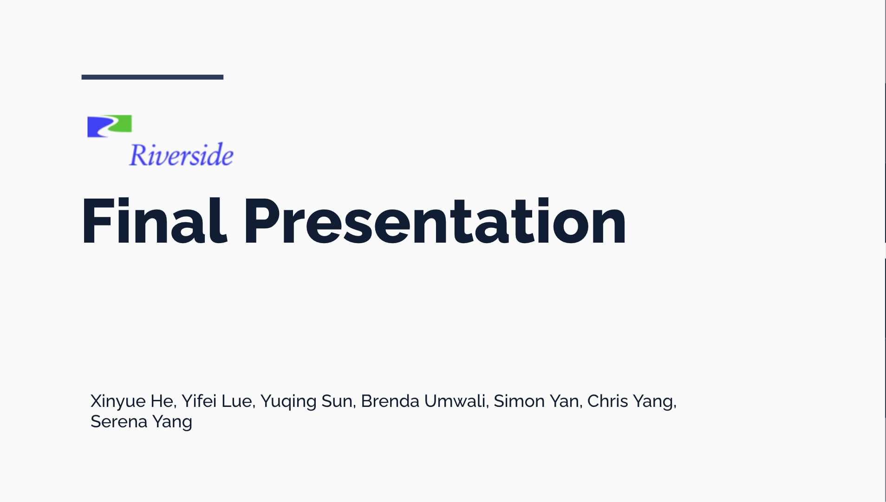

Investment Analytics
Riverside Company
Sep 2025 – Dec 2025 · Ithaca, New York, U.S.
Built a Python data pipeline and analyzed 200+ investments to evaluate relationships between operating targets and IRR. Conducted trend and momentum analysis, identified early underperformance signals, and created a Tableau dashboard to visualize portfolio performance.
View Project →